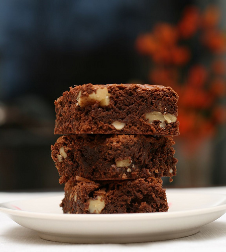

Favourite Recipe

| Ingredient |
Amount |
| Butter |
200 g |
| Dark 70% chocolate |
200 g |
| Eggs |
3 |
| Sugar |
200 g |
| Wheat flour |
100 g |
| Chopped white choclate |
100 g |
| Salt |
1/2 tbsp |
Instructions
- Line a 24x24 cm cake tin with parchment paper and heat the oven at 170˚C.
- Melt the butter and chocolate in a water bath or microwave.
- Whisk the eggs and sugar into the foam with an electric mixer. Add the melted chocolate-butter mixture and mix until smooth. Add flour, salt and chopped white chocolate pieces, mix completely until smooth.
- Pour the dough into a tin and bake in a 170 degree oven for 30-35 minutes until the cake feels dry.
- Serve warm or allow to cool in the tin, then lift out of the tin and cut into pieces.
NB! The right browns are a little dry and cracked on the top, but sometimes still wet on the inside 🙂!